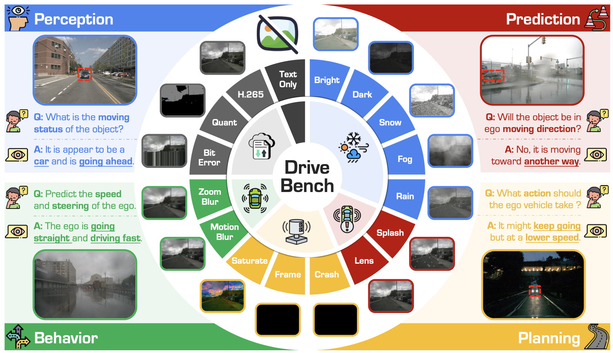
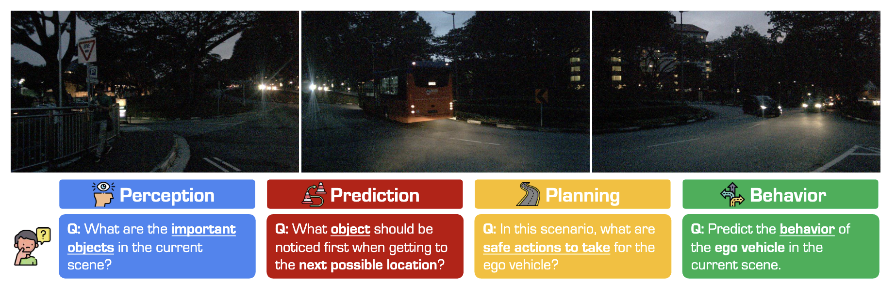
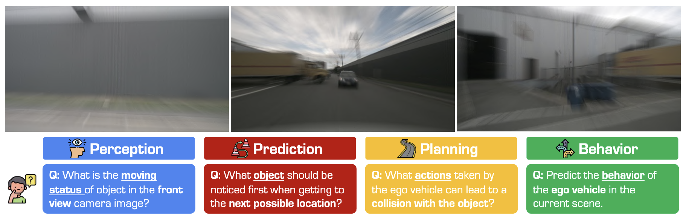
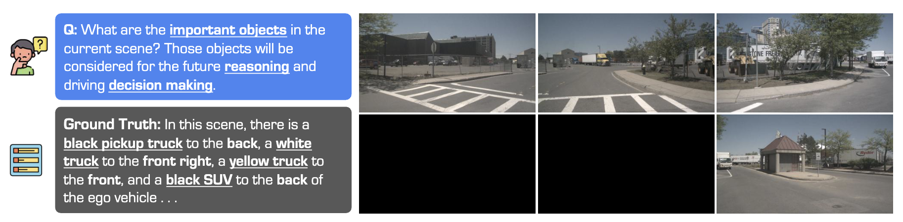
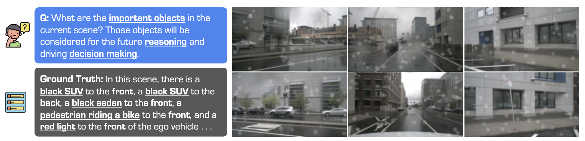

👋 Welcome to Track #1: Driving with Language of the 2025 RoboSense Challenge!
In the era of autonomous driving, it is increasingly critical for intelligent agents to understand and act upon language-based instructions. Human drivers naturally interpret complex commands involving spatial, semantic, and temporal cues (e.g., "turn left after the red truck" or "stop at the next gas station on your right"). To enable such capabilities in autonomous systems, vision-language models (VLMs) must be able to perceive dynamic driving scenes, understand natural language commands, and make informed driving decisions accordingly.
🏆 Prize Pool: $2,000 USD (1st: $1,000, 2nd: $600, 3rd: $400) + Innovation Awards
This track evaluates the capability of VLMs to answer high-level driving questions in complex urban environments. Given question including perception, prediction, and planning, and a multi-view camera input, participants are expected to answer the question given the visual corrupted images.
Duration: 15 June 2025 – 15 August 2025
In this phase, participants are expected to answer the high-level driving questions given the clean images. Participants can: - Fine-tune the VLM on custom datasets (including nuScenes, DriveBench, etc.) - Develop and test their approaches - Submit results as a json file - Iterate and improve their models based on public leaderboard feedback
Ranking Metric: Weighted score combining:
Duration: 15 August 2025 – 15 October 2025
In this phase, participants are expected to answer the high-level driving questions given the corrupted images. Participants can: - Fine-tune the VLM on custom datasets (including nuScenes, DriveBench, etc.) - Develop and test their approaches - Submit results as a json file - Iterate and improve their models based on public leaderboard feedback
Ranking Metric: Weighted score combining:




The evaluation uses two primary metrics to assess model performance:
| Metric | Usage | Description |
|---|---|---|
| Accuracy | Multi-Choice Questions (MCQs) | Exact match between predicted and ground truth answers |
| LLM Score | Visual Question Answering (VQA) | Score from 0-10 assigned by an LLM evaluator using detailed rubrics |
The final ranking is determined by a weighted combination of both phases:
This weighting emphasizes the importance of robust performance under visual corruptions (Phase 2) while maintaining baseline capabilities on clean images (Phase 1).
In this track, we adopt Qwen2.5-VL7B as our baseline model. Beyond the provided baseline, participants are encouraged to explore alternative strategies to further boost performance:
We use Qwen2.5-VL-7B-Instruct as the baseline model. The baseline performance on Phase 1 is as follows:
| Task | Question Type | Accuracy (%) |
|---|---|---|
| Perception | MCQ | 75.5 |
| VQAobj | 29.2 | |
| VQAscene | 22.2 | |
| Prediction | MCQ | 59.2 |
| Planning | VQAobj | 29.6 |
| VQAscene | 31.2 | |
| Average | All Types | 42.5 |
We provide the following resources to support the development of models in this track:
| Resource | Link |
|---|---|
| GitHub Repository | github.com/robosense2025/track1 |
| HuggingFace Dataset | huggingface.co/datasets/robosense/datasets |
| Baseline Model | Qwen2.5-VL-7B-Instruct |
| Related Paper | arXiv:2501.04003 |
| Registration | Google Form |
| Evaluation Server | CodaBench Platform |
The participants can use any VLMs that are open-sourced. Therefore, GPT-4o, Claude 3.5 Sonnet, Gemini 2.0 Pro, etc., are NOT allowed.
If using an existing open-source VLM, please submit your code. If you have performed any fine-tuning, you must also submit the trained weights. Additionally, we strongly recommend including:
• A README file explaining environment setup and usage
• An inference script to directly launch for reproduction
Submissions that CAN NOT be reproduced on our end will be considered INVALID.
We use LLM to evaluate open-ended questions. The MCQs result should the the same, while open-ended questions might vary within a small numerical range.
Yes, you are free to modify the prompts. This includes techniques such as prompt engineering, retrieval-augmented generation (RAG), and in-context learning. However, to ensure correct evaluation, please DO NOT alter the question field in your submission JSON file.
No. This competition is intended to evaluate the capabilities of VLMs specifically. The use of task-specific models (e.g., object detectors, trajectory predictors) that directly address the task or provide extra information to the VLMs is NOT allowed. Modification within the VLM architectures is allowed, such as the vision encoder.